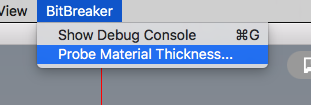

Solder Stencil
Solder stencils make adding solder paste to your PCB very easy. An entire PCB can have it's solder paste added in just a few seconds.
This guide describes how to use an Eagle file, transparency film, and a Bantam milling machine to make a solder stencil.
Cream Layer to SVG
A stencil is just a flat material, with a bunch of holes where we want our solder paste to be.
Before milling a stencil, we need to create a file with those holes.
In Eagle, the SMD pads where solder paste goes is on the tCream layer (or the bCream layer the part is mirrored).
Hide all layers in Eagle, except for the tCream layer.
Save the file as a vectored PDF, by going to File -> Print, and select Print to File (PDF).
Make sure the "Scale" is 1.0, and that the Black and Solid options are selected.
Open the file in Adobe Illustrator (or similar software), and then save it as an SVG file.
Before the SVG is generated, Illustrator gives you some options specific to SVG files. Select the SVG version 1.0 from the dropdown menu before saving.

NOTE: the Bantam app expects SVG version 1.0, if it is not 1.0 then some pieces of the design may be missing.
Prepare Toolpaths
Open the SVG file in the Bantam desktop software. The file will first appear with some default bits and settings.
Set the bit so that it is using the PCB Engraving Bit.
Turn off the Engraving cuts, and only use the Cutout. Engraving would take much longer, while cutout will remove the holes with a single line each.
Right now the cutout is on the outside, let's fix that.
First, open the Advanced settings section, and change the Cutout placement option from Outside to Inside.
Here is a picture with all the settings:
Milling Transparency Stencils
Install an engraving bit into the Bantam milling machine.
Also, attach a PCB board (single or double sided) onto the Bantam's bed. We will be using this as a "spoilboard".
Run the "Tool Locate" process, to probe the location of the bit. See the guide on locating the bit here
And then, measure the thickness of your PCB board with the BitBreak -> Probe Material Thickness process. See the guide on probing the material thickness here.
That guide uses the "1/8 inch diameter probe" to measure the thickness, but I recommend you use the engraving bit here because that's what we will use to make the stencil.
Probing the PCB board will give us it's thickness (relative to the position of the metal spoil board).

The transparency sheet we will cut will eventually be taped down on top of the PCB board.
So, we are going to tell the Bantam software that our material (the transparency) has a Z position equal to the thickness of the PCB board. Usually we do not touch this Z setting, this is a rare time when it is helpful.
Then, because the transparency is thin, we will say the material's thickness is 0.5mm (this does not need to be too perfect, the Z position is more important).

Tape the transparency down onto the PCB board, using double-sided tape.
Mill the SVG file (milling only the Cutout with the "Advanced" cutout setting Inside)
Watch the cuts closely. If you do not think the engraving bit is reaching down to the copper on the PCB plate, then stop the job and decrease the material's Z position by 0.1 millimeters. Then try again.
When it is done, you will have a transparency solder stencil. The spoil board (copper plate) underneath should be cut through just a little bit.
When you are done, there might be quite a few rough spots. The bit may not cut perfectly, so you will want to clean up the transparency paper so it is as smooth as possible.
Start by using a blade to cut out any holes that were not completely clean. Use a share blade.
Then, use a scour pad to rub off any remaining parts that are not smooth. However, do not rub too much or your transparency will have so many scratches on it that you won't be able to see through it any more.
Setup the Stencil
When the solder paste is spread, we'll be spreading with a squeegee (or credit card, gift card, etc). This involves pushing down onto the PCB with the squeegee, so that the stencil is perfectly flat to the copper board.
However, we don't want the stencil to bend at all when we are pushing down. For example, it could bend around the outer dimension (cutout) of our PCB.
To prevent this bending, you can simply tape together three spare FR1 boards, so that they squeeze around your PCB.
Or, you can be a little bit fancier if you want, and add a frame to your PCB. A frame is an extra section of board that you leave attached to the outer perimeter of your PCB design.
Here is a PCB I made with a frame. I used 1mm wide sections of board to keep the frame and PCB design connected.
Also, notice the big hole in the middle was given a bit of a fill. This way, the stencil won't accidentally bend into the big hole.
Lay the transparency stencil on top of the PCB, and line up the holes with the pads on the copper.
Tape just one edge of the stencil down. This way, the stencil will stay aligned, and you can lift if up like a hinge.
Spread the Paste
Now is the fun part.
Take the solder paste out from the fridge, and create a line of it near the tape.
You want the solder line to be the same width of your PCB.
Using your squeegee (or credit card, gift card, etc), firmly hold it in one hand. Press down onto just above the solder paste.
While continuing to press down, drag the squeegee towards you, both pulling the paste and pushing it down into the holes.
Drag the paste across the board all in one movement. You can do a second spread if you need to.
Do not do more than two (2) squeegee motions. You will start to move the paste around and make it messy on the PCB.
Lift the stencil up, and your solder paste should be spread across all your pads.
Fix Errors and Clean
If you have any spots you need to fix, you can use a need like described in the SMD Soldering guide.
If you are going to reuse your stencil, you can clean it with soap and isopropyl alcohol.
Eventually, the transparency will start to wear and break. They could last maybe 3-5 times max before not being usable anymore.
If your solder paste came out very bad, and you want to start all over again, you can also easily clean your PCB with some isopropyl alcohol.